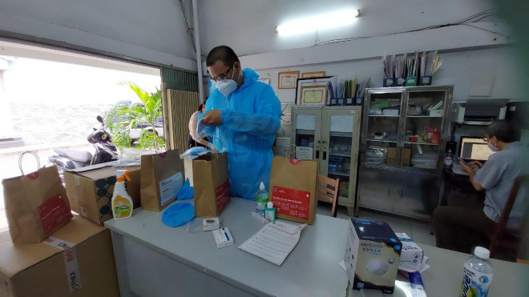

Sở Y tế TP.HCM ra văn bản khẩn chấn chỉnh việc quản lý, chăm sóc F0 tại nhà
Sở Y tế TP HCM yêu cầu tất cả trường hợp F0 đang cách ly tại nhà và cơ sở cách ly trên địa bàn phải được cấp phát túi thuốc điều trị Covid-19 trong vòng 24 giờ kể từ khi tiếp nhận. Túi thuốc điều trị Covid-19 tại nhà phải đúng thành phần theo hướng dẫn
Sở Y tế TP HCM vừa có văn bản khẩn gửi Trưởng Ban chỉ đạo phòng chống dịch và Giám đốc Trung tâm Y tế các quận, huyện, TP Thủ Đức về việc chấn chỉnh công tác chăm sóc, quản lý F0 tại nhà trên địa bàn.

Nhân viên Trạm Y tế phường 8, quận 11, TP HCM chuẩn bị túi thuốc khi đến nhà thăm khám cho bệnh nhân
Theo Sở Y tế TP HCM, thời gian qua, thực tế cho thấy việc tổ chức chăm sóc và cung cấp thuốc điều trị cho người F0 theo phác đồ đã góp phần là giảm tỷ lệ nhập viện, giảm tỷ lệ chuyển nặng và giảm tử vong. Tuy nhiên, thời gian gần đây, Sở Y tế nhận được những phản ánh bức xúc của người dân qua đường dây nóng về việc người đã được xác định là F0, người dân tự xét nghiệm và có kết quả dương tính nhưng không liên hệ được trạm y tế phường, xã, thị trấn để được tư vấn, cấp phát túi thuốc điều trị Covid-19.
Trước thực trạng này, Sở Y tế TP HCM yêu cầu Giám đốc Trung tâm Y tế và Ban Chỉ đạo phòng chống dịch các quận, huyện, TP Thủ Đức tăng cường phố biển, kiểm tra, giám sát hoạt động chăm sóc, quản lý F0 cách ly tại nhà do trạm y tế phường, xã, thị trấn và các trạm y tế lưu động thực hiện. Sở Y tế TP HCM lưu ý cần chú trọng các hoạt động cụ thể sau:
Tất cả trường hợp F0 đang cách ly tại nhà và cơ sở cách ly trên địa bản phải được cấp phát túi thuốc điều trị Covid-19 trong vòng 24 giờ kể từ khi tiếp nhận. Túi thuốc điều trị Covid-19 tại nhà phải đúng thành phần theo hướng dẫn của Sở Y tế, đặc biệt lưu ý tuân thủ chỉ định và cấp phát thuốc Mulnopiravir theo đúng hướng dẫn của Bộ Y tế.
Tất cả trạm y tế phường, xã, thị trấn và trạm y tế lưu động phải phân công trực đường dây nóng 24/7 để giải đáp các thắc mắc của người dân về phòng chống dịch Covid-19, đặc biệt là tư vấn, khám chữa bệnh tại nhà cho người F0; tiếp nhận danh sách người F0 do các nơi chuyển đến hoặc người dân tự khai báo sau khi tự xét nghiệm và có kết quả dương tính.
Quy định rõ trách nhiệm của từng cá nhân, đơn vị trong trường hợp người dân không liên hệ được số điện thoại đường dây nóng để được hỗ trợ tư vấn, khám chữa bệnh tại nhà cho F0; không được cấp phát túi thuốc điều trị Covid-19 tại nhà cho F0 trên địa bàn hoặc cấp phát túi thuốc nhưng không đúng thành phần theo hướng dẫn của Sở Y tế
Sở Y tế TP HCM cho biết đang triển khai 10 đoàn kiểm tra việc tuân thủ công tác phòng chống dịch, nhất là kiểm tra công tác chăm sóc và quản lý F0 tại nhà trên địa bàn các quận, huyện, TP Thủ Đức; hoạt động trạm y tế lưu động tại các phường, xã, thị trấn để ghi nhận mô hình hay, nhân rộng; đồng thời phát hiện, chấn chỉnh, xử lý nghiêm các cá nhân không tuân thủ quy định.